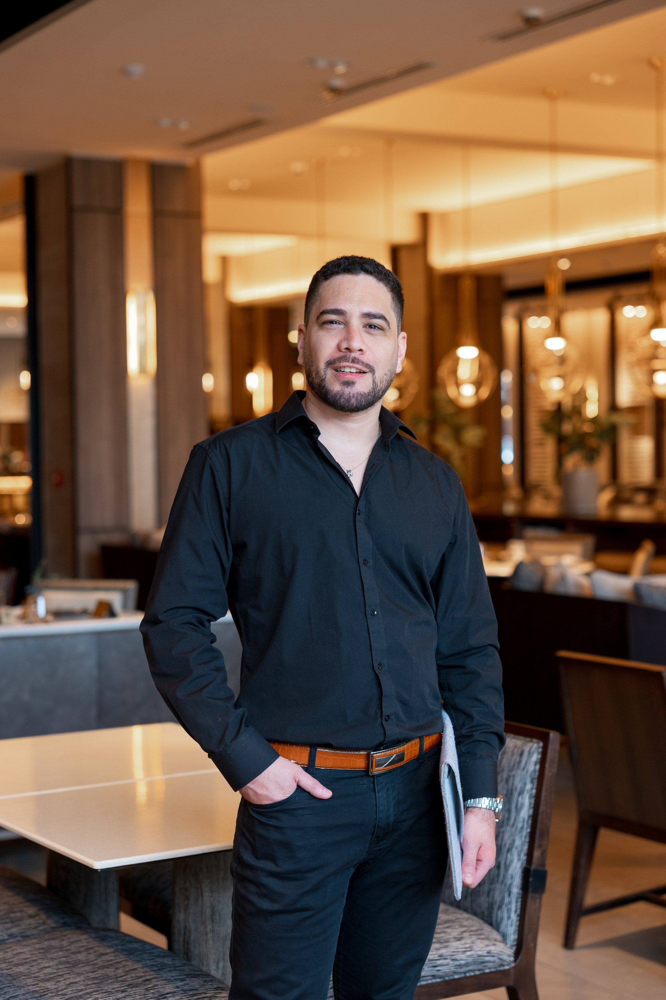

Boutique Corporativa especializada en migración, derechos humanos y empresas. 13 años construyendo relaciones de confianza con migrantes, emprendedores y empresas en Chile.

Abogado venezolano, revalidante en la Universidad de Chile, especializado en derecho migratorio y asesoría empresarial. Fundó Anteros Legal con una premisa clara: el acceso a una estrategia legal de calidad no debería depender del tamaño de la ciudad donde vives ni del país del que vienes.
"Anteros, en la mitología griega, es el dios de la pasión que se construye con tiempo, compromiso y reciprocidad. Esa es nuestra filosofía: una relación profesional fundada en confianza mutua y resultados reales."
A lo largo de 13 años de trayectoria ha acompañado a más de mil personas y empresas en procesos migratorios complejos, constituciones de empresa y defensas ante expulsiones. Es Magíster en Gobierno y Dirección Pública, becado por la Konrad-Adenauer-Stiftung, y completó formación en Harvard Business School gracias a una beca del Banco Santander. En 2016 obtuvo una sentencia de la Sala Constitucional del Tribunal Supremo de Venezuela que reconoció derechos filiativos a un niño con dos madres, fijando jurisprudencia para la comunidad LGBTIQ+ del país.
Trabaja con organismos internacionales como ACNUR, OIM y la CIDH, y en 2026 fue seleccionado para el programa Mentor Austral Magallanes (Netmentora · HUB FPYME · CORFO). Su visión es consolidar Anteros Legal como la firma boutique de referencia para la diáspora latinoamericana en Chile: no solo un proveedor de servicios legales, sino un aliado estratégico para quienes construyen su vida y sus proyectos en este país.
Residencias temporales y definitivas, nacionalización, reunificación familiar, defensa ante expulsiones y recursos de protección. Especialista en Ley 21.325.
Constitución de empresas, contratos comerciales, cumplimiento laboral y asesoría mensual para emprendedores y PYMES.
Recursos de protección, amparos constitucionales y representación ante tribunales superiores en casos que afectan derechos fundamentales.
Auditorías, políticas internas, contratos para trabajadores migrantes y certificación de empleador regular. Para empresas que contratan migrantes en Chile.
Servicio 100% digital para quienes planifican su llegada a Chile desde su país de origen.
Acompañamiento estratégico para migrantes que quieren emprender en Chile: constitución, cumplimiento, visas para equipo y protección de la empresa.
Te decimos exactamente qué puedes esperar, cuánto tarda y cuánto cuesta. Sin letra chica.
Tu caso no es un expediente. Es una persona, una familia o un proyecto. Lo tratamos así.
CRM propio, automatizaciones y seguimiento en tiempo real. Sabemos dónde está tu caso en todo momento.
Atención remota para toda LATAM. La calidad no depende de la geografía.
Una consulta inicial para evaluar tu situación y definir el camino.